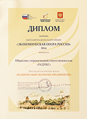

Стоматология «РАДИКС»
с 1997 года в Санкт-Петербурге
| Метро | Адрес | Телефон |
|---|---|---|
| Парк Победы | ул. Бассейная, д. 37 | +7 (812) 388-71-69 |
| Проспект Ветеранов | ул. Танкиста Хрустицкого, д. 5 | +7 (812) 752-67-06 |
| Проспект Ветеранов | пр. Ветеранов, д. 89, корп. 4 | +7 (812) 750-00-64 |
| Проспект Ветеранов | ул. Генерала Симоняка, д. 6 | +7 (812) 750-01-60 |
Система стоматологических клиник «РАДИКС»
«РАДИКС» – это четыре современные стоматологические клиники, расположенные в Кировском и Московском районах. Главная отличительная черта наших клиник – тщательно подобранный медицинский персонал, занимающий достойное место в научной и практической стоматологии Санкт-Петербурга.

За профессионализм, востребованность, многолетний вклад в программу здравоохранения Санкт-Петербурга ООО «РАДИКС» награждено ДИПЛОМОМ ЛАУРЕАТА ЕЖЕГОДНОЙ НАЦИОНАЛЬНОЙ ПРЕМИИ «ЭКОНОМИЧЕСКАЯ ОПОРА РОССИИ».
Постоянно повышая квалификацию, мы владеем самыми современными технологиями лечения и протезирования зубов, имплантации, исправления прикуса (ортодонтии), пародонтологии, хирургии, эстетической и детской стоматологии. Клиники оснащены новейшим оборудованием и применяют только проверенные высококачественные материалы. При этом мы стремимся сохранять невысокий уровень цен для того, чтобы быть доступными для большинства петербуржцев.
«РАДИКС» проводит ряд социальных программ для детей, малоимущих и пенсионеров, которым предоставляются существенные льготы в лечении. Для снижения стоимости повторных посещений введены накопительные дисконтные карты, применяется система семейных скидок.
Наши пациенты не ищут других врачей в стоматологиях Санкт-Петербурга, а подавляющее большинство первичных обращений происходит по совету людей, вылеченных в наших клиниках.
Самые известные выбирают нас!
Среди благодарных пациентов клиники «Радикс» встречаются и те, чьи улыбки знакомы многим из вас. Например, артисты всемирно известного театра Лицедеи.